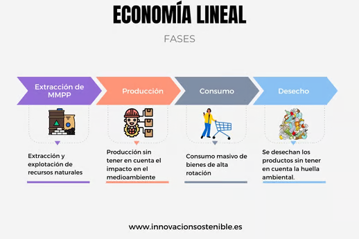
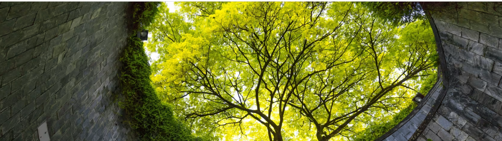
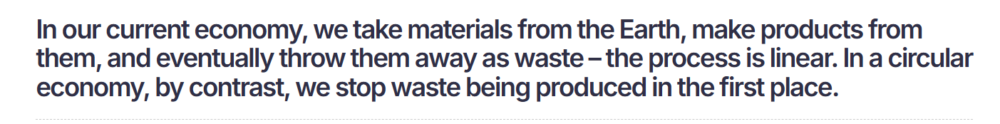
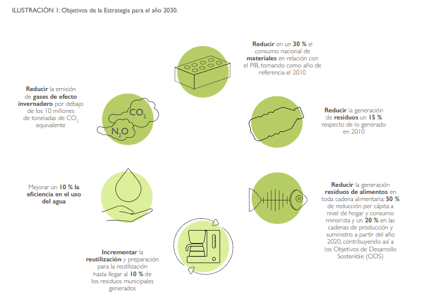
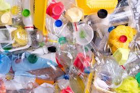
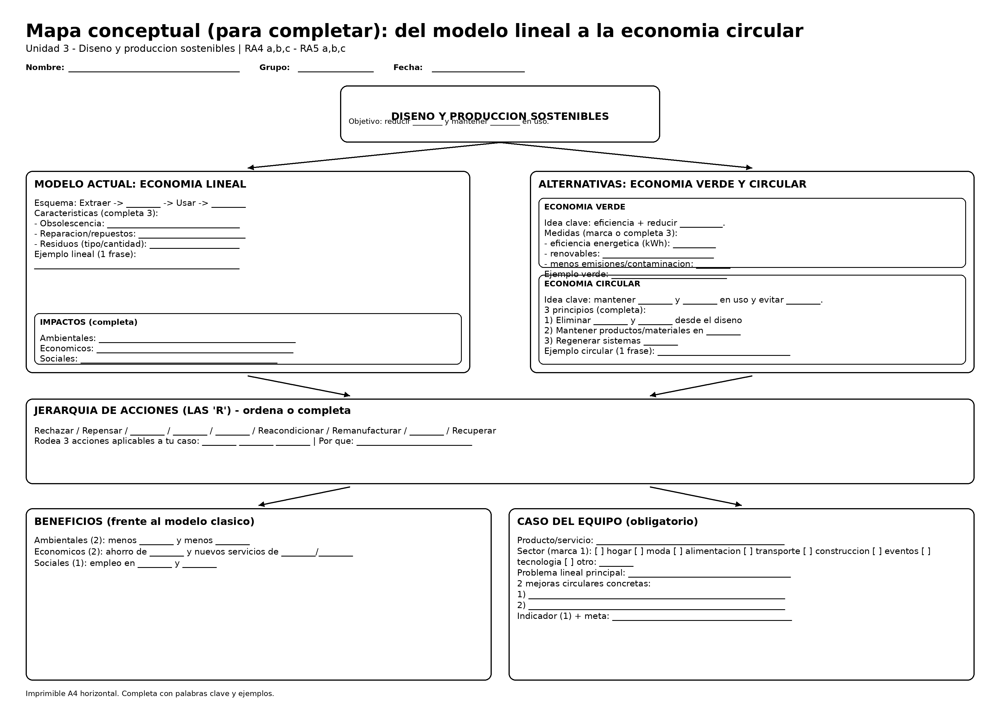

Sesión 1 -
Criterios: RA4 a, b, c · RA5 a, b, c
1️⃣-Del modelo lineal a la economía circular
1) Modelo: economía lineal
1) Modelo actual de producción y consumo: economía lineal
El modelo lineal sigue el patrón extraer → fabricar → usar → tirar (“take-make-waste”). Su lógica es maximizar ventas de unidades nuevas, aunque eso aumente consumo de recursos y residuos. (ellenmacarthurfoundation.org)

Rasgos característicos (para identificarlo en cualquier ámbito):
- Diseño para reemplazo (vida útil corta, reparaciones difíciles o caras).
- Baja reutilización (productos y materiales salen rápidamente del sistema).
- Residuos al final (se gestiona “lo que sobra” en lugar de evitar que aparezca).
- Impactos ocultos (ambientales y sociales fuera del precio final).
Ejemplos “lineales” muy sencillos:
- Moda: camiseta barata que se deforma rápido → se tira; nuevo ciclo de compra.
- Alimentación: envases monodosis para consumo diario.
- Construcción: derribo sin desmontaje selectivo → escombros mezclados.
- Transporte: uso sistemático de coche privado para trayectos cortos por hábito.
- Tecnología: móvil con batería sellada y repuestos no disponibles (se sustituye el equipo).
2) Economía verde
¿qué es y cómo se reconoce?
Definición (ONU/PNUMA): una economía verde (inclusiva) busca mejorar el bienestar y la equidad mientras reduce riesgos ambientales y escasez ecológica . (UNEP - UN Environment Programme)

Qué suele implicar en la práctica (sin salir aún de lo “lineal”):
- Eficiencia energética y de materiales (hacer “lo mismo” con menos).
- Sustitución por energías renovables.
- Reducción de contaminación, emisiones y toxicidad.
- Mejora de gestión ambiental en procesos (medición, objetivos, control).
Ejemplos (verde) en distintos sectores:
- Hostelería: equipos eficientes + reducción de desperdicio alimentario.
- Industria: optimizar consumo de agua/energía en una línea de producción.
- Agricultura: riego eficiente y reducción de fertilizantes de alto impacto.
- Centro educativo: bajar impresión, controlar consumos, separar residuos correctamente.
Importante: “verde” no siempre es “circular” . Puede reducir impactos, pero si el producto sigue siendo “usar y tirar”, no hemos cerrado ciclos.
3) Economía circular:
¿qué es, principios y procesos típicos?
Definición (Ellen MacArthur Foundation): es un sistema en el que los materiales no se convierten en residuos y la naturaleza se regenera ; los productos y materiales se mantienen en circulación mediante mantenimiento, reutilización, reparación, reacondicionamiento, remanufactura, reciclaje y compostaje . (ellenmacarthurfoundation.org)
Tres ideas clave para explicarlo en clase (muy claras):
- Eliminar residuos y contaminación desde el diseño
- Mantener productos y materiales en uso
- Regenerar sistemas naturales (ellenmacarthurfoundation.org)
Qué NO es:
- “Circular” no es solo reciclar . El reciclaje es útil, pero suele ser última opción si ya no puedes reutilizar, reparar o reacondicionar . (ellenmacarthurfoundation.org)
Marco europeo (para contextualizar): La UE impulsa la circularidad con medidas que abarcan todo el ciclo de vida , incluyendo diseño del producto , prevención de residuos y mantener recursos en la economía el mayor tiempo posible. (Environment)

4) Comparación rápida
lineal vs verde vs circular
| Enfoque | Pregunta guía | Qué cambia “de verdad” |
|---|---|---|
| Lineal | ¿Cuánto vendo? | Flujo rápido hacia residuo |
| Verde | ¿Cómo impacto menos? | Menos energía/emisiones, a veces sin cambiar el “usar y tirar” |
| Circular | ¿Cómo evito el residuo y mantengo valor? | Diseño para durar, reparar, reutilizar; logística inversa; materiales secundarios |
5) Beneficios
de la economía verde y circular frente al modelo clásico
Ambientales
- Menos residuos y contaminación; menor presión sobre recursos. (Parlamento Europeo)
Económicos
- Mayor resiliencia ante escasez de materias primas y precios volátiles; oportunidades de negocio en reparación, reacondicionado y materiales secundarios. (Parlamento Europeo)
Sociales
- Empleo y actividad en sectores como mantenimiento, gestión de residuos y servicios circulares (aunque la calidad del empleo depende de la regulación y la implementación). (eea.europa.eu)
Dato útil para debate (diagnóstico de realidad): En la UE, la “tasa de circularidad” (materiales reutilizados/reciclados frente al total) ronda el 12% , con objetivo de duplicarla hacia 2030 según el marco de la Comisión. (Environment)
Contexto España (para conectar con entorno cercano): La estrategia España Circular 2030 plantea mantener el valor de productos, materiales y recursos en la economía durante más tiempo, como cambio de modelo de producción y consumo. (Ministerio de Transición Ecológica)

6) Ejemplos
“lineal → circular” para usar en clase
-
Ropa (moda)
-
Lineal: “compro barato → uso poco → tiro”
-
Circular: segunda mano + reparación + diseño duradero + recogida textil para valorización.
-
Muebles
-
Lineal: tablero barato difícil de reparar → vertedero
-
Circular: diseño modular, tornillería estándar, repuestos, venta de piezas, recompra.
-
Electrónica
-
Lineal: sustitución por fallo menor
-
Circular: reparabilidad (batería/pantalla), reacondicionado con garantía, devolución y recuperación de componentes.
-
Alimentación
-
Lineal: envase de un solo uso
-
Circular: reutilizables retornables, compra a granel, compostaje de biorresiduos.
-
Servicios (no “productos”)
-
Lineal: vender unidades (p. ej., impresoras) y consumibles
- Circular: producto-servicio (pago por uso + mantenimiento + recogida + reutilización de piezas).

7) Enlaces
Estos enlaces son buenas “fuentes base” para citar definiciones y principios.
- Economía circular (introducción y procesos) — Ellen MacArthur Foundation. (ellenmacarthurfoundation.org)
- Principios: eliminar residuos, circular materiales, regenerar naturaleza — EMF. (ellenmacarthurfoundation.org)
- Economía circular en la UE (marco y acción) — Comisión Europea. (Environment)
- Definición y beneficios (visión divulgativa europea) — Parlamento Europeo. (Parlamento Europeo)
- Economía verde (definición PNUMA/UNEP) — UNEP. (UNEP - UN Environment Programme)
- Estrategia España Circular 2030 — MITECO. (Ministerio de Transición Ecológica)
URLs
https://www.ellenmacarthurfoundation.org/topics/circular-economy-introduction/overview
https://www.ellenmacarthurfoundation.org/eliminate-waste-and-pollution
https://environment.ec.europa.eu/strategy/circular-economy_en
https://eur-lex.europa.eu/legal-content/EN/TXT/HTML/?uri=CELEX:52020DC0098
https://www.europarl.europa.eu/topics/en/article/20151201STO05603/circular-economy-definition-importance-and-benefits
https://www.unep.org/explore-topics/green-economy/about-green-economy
https://www.miteco.gob.es/content/dam/miteco/es/calidad-y-evaluacion-ambiental/temas/economia-circular/espanacircular2030_def1_tcm30-509532_mod_tcm30-509532.pdf
https://www.miteco.gob.es/es/calidad-y-evaluacion-ambiental/temas/economia-circular/estrategia.html
2️⃣- Actividad
En el folio añade tu nombre y dos apellidos.
Base breve para completar una infografía en folio (alumnado)
Tema: Del modelo lineal a la economía circular (RA4 a,b,c · RA5 a,b,c) Instrucción: completa los huecos con palabras clave y añade 1 ejemplo por bloque.
1) Modelo actual: economía lineal
Esquema: _ → _ → _ → _ Problemas típicos (elige 3):
- __ (vida útil corta)
- __ difícil / repuestos caros
- Mucho __ (envases, residuos, escombros)
- Alto consumo de _ y _ Ejemplo lineal (tu ámbito): ________
2) Economía verde
Idea clave: mejorar bienestar y empleo reduciendo _ ambientales y usando recursos con más _. Acciones típicas (elige 3):
- Eficiencia __ (kWh)
- Menos __ (CO₂)
- Menos __ (contaminación)
- Más __ (renovables) Ejemplo verde: ________
3) Economía circular
Idea clave: mantener _ y _ en uso el mayor tiempo posible y evitar que se conviertan en __. 3 principios (completa):
- Diseñar para eliminar _ y _
- Mantener productos/materiales en __
- Regenerar sistemas __
“R” circulares (ordena o marca las más importantes): Rechazar / Repensar / _ / _ / _ / Reacondicionar / Remanufacturar / _
Ejemplo circular: ________
4) Comparación rápida (rellena)
- Lineal: “vender más __ nuevas”
- Verde: “hacer lo mismo con menos _ y menos _”
- Circular: “evitar el _ desde el diseño y recuperar _”
5) Beneficios frente al modelo clásico
Ambientales (2): menos _ · menos _ Económicos (2): ahorro de _ · nuevos negocios de */* Sociales (1): más empleo en _ y __
6) Tu caso real (debes escoger uno)
Producto/servicio elegido: ____ 2 mejoras circulares concretas:
Indicador para medir mejora (1): ______
3️⃣- Ejemplo base mapa conceptual
En el folio añade tu nombre y dos apellidos.

💻 Moodle & Portfolio
- Sube una captura hecha con tu móvil a tu carpeta Drive y a Moodle
-
En el folio añade tu nombre y dos apellidos.
-
Súbela además a tu Portfolio y actualízalo.